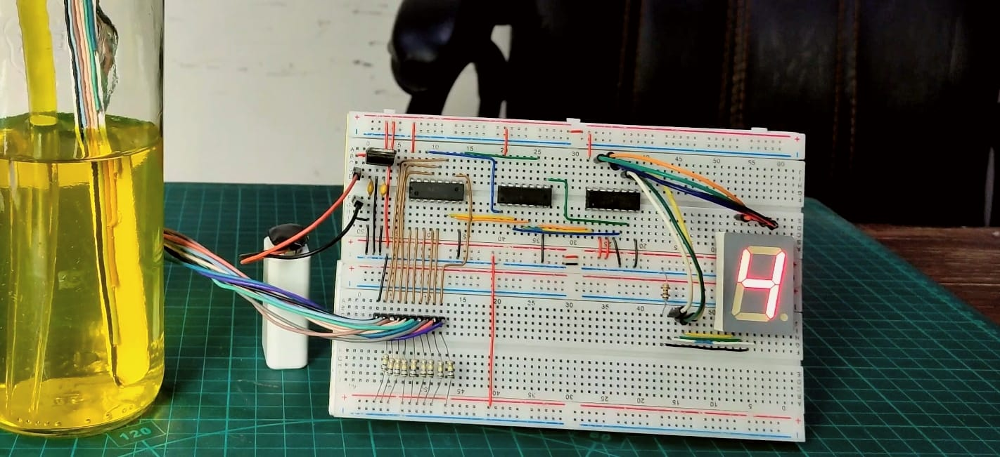

Blogs (projects)
A water level indicator utilizes sensors to detect and report the water level in tanks and reservoirs. This system helps in efficient water management and prevents overflows, ensuring sustainable usage.
About Me
Computer Science and Engineering student skilled in communication, management, and MS office, with a proficiency in English language. Future-focused on data science with a keen interest in contributing to the education sector. Accomplished self-made artist specializing in graffiti and painting